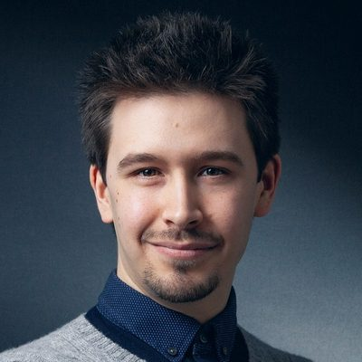

Dr.-Ing. Thomas Pöllabauer-Berkei

Technical Lead | Applied AI & Computer Vision
Profile
Technical Lead and AI specialist with expertise in Computer Vision, Machine Learning, and cloud-native AI infrastructure. Experienced in leading industrial AI projects from research and prototyping to scalable deployment in production environments. Strong background in applied research, software architecture, MLOps, and technical leadership with experience across manufacturing, AR/VR, and infrastructure domains.
Curriculum Vitae
A detailed overview of my professional experience, research activities, publications, and technical expertise is available in my CV.
Experience
Technical Lead Predictive Maintenance and AI
PROFI Engineering Systems AG
(May 2025 – present)
- Own technical strategy, architecture, and delivery of AI-driven software products, including PROinfra: predictive maintenance for civil infrastructure such as bridges, roads, and retaining walls.
- Domain expert for Machine Learning, Computer Vision, and applied AI; lead containerization and orchestration of deployments (Docker, Podman, Kubernetes, OpenShift).
- Introduced department-wide Kubernetes-based DevOps and continuous deployment following Infrastructure-as-Code and GitOps principles.
- Architected and rolled out a department-wide, spec-driven development workflow for agentic AI with human-supervised review gates, enabling safe and auditable use.
- Coordinate engineering, product, and business stakeholders; pre-sales and technical consulting for customers and partners; hire and mentor engineering talent.
Research Scientist, Deep Learning & Computer Vision
Fraunhofer Institute for Computer Graphics Research IGD, Virtual and Augmented Reality
(Apr 2020 – Dec 2024)
- Applied research and industrial technology transfer: state-of-the-art Computer Vision for object detection, 6D pose estimation, segmentation, and classification.
- Generative ML models (GANs, encoder-decoder, diffusion), synthetic data pipelines, and domain adaptation for robust AI with limited real data.
- Automated industrial quality inspection; scalable training and inference infrastructure for real-world deployment.
- Trained, tuned, monitored, and deployed state-of-the-art ML models for research and industry projects.
- Deployed ML workflows on high-performance computing (HPC) clusters, including for doctoral research at TU Darmstadt.
- Project lead of Fraunhofer-wide research projects and industry collaborations in manufacturing, robotics, AR/VR, automotive, and infrastructure.
- Supervised student research, contributed to academic teaching, and published peer-reviewed work in Computer Vision, Machine Learning, and 3D Vision.
Student Assistant, Computer Vision
Fraunhofer Institute for Computer Graphics Research IGD, Virtual and Augmented Reality
(Sept 2018 – Feb 2020)
- Data analysis, continuous integration and testing, Machine Learning, and optimization for Computer Vision and Visual Computing projects.
- Quality assurance in an Industry 4.0 context in cooperation with Daimler AG.
- Developed experimental software prototypes and evaluation pipelines.
Selected Projects
- SEC-Learn: Sensor Edge Cloud for distributed learning. Project Lead, Fraunhofer-wide research project (Jan 2021 – Dec 2024).
- BAU-DNS: sustainable, modular, and circular building renovation. Project Lead, Fraunhofer-wide research project (Mar 2023 – Dec 2024).
- DiffEd-Pose: object pose estimation from synthetic data via differentiable-rendering-driven federated learning. Project Lead, cooperation with Software AG within the Software Campus program (Feb 2021 – Jan 2022).
- ICE Train Interior Surveillance: proof of concept in cooperation with Deutsche Bahn AG (Mar 2022 – Sept 2022). 3rd place, Best Industrial Project at Fraunhofer IGD.
Selected Publications
- Pöllabauer et al. Improving 6D Object Pose Estimation of Metallic Household and Industry Objects. IEEE/RSJ IROS 2025.
- Pöllabauer et al. End-to-End Probabilistic Geometry-Guided Regression for 6DoF Object Pose Estimation. IEEE AIxVR 2025.
- Pöllabauer et al. Generalizing Neural Radiance Fields for Robust 6D Pose Estimation of Unseen Appearances. ISVC 2024.
- Pöllabauer et al. Fast Training Data Acquisition for Object Detection and Segmentation using Black Screen Luminance Keying. WSCG 2024.
- Pöllabauer et al. Detection and Pose Estimation of Flat, Texture-less Industry Objects on HoloLens using Synthetic Training. SCIA 2023.
- Pöllabauer. Advancing Machine Learning Algorithms for Object Localization in Data-Limited Scenarios. Dissertation, TU Darmstadt, 2025.
Full list on Google Scholar and ORCID. Published datasets for Machine Learning are on Hugging Face.
Education
Dr.-Ing., Computer Science
Technical University of Darmstadt, Interactive Graphics Systems
(Mar 2023 – Jan 2025)
Thesis: Advancing ML Algorithms for Object Localization in Data-Limited Scenarios. Awarded magna cum laude.
Master of Science in Visual Computing
Technical University of Darmstadt
(Oct 2017 – Feb 2020)
Bachelor of Science in Computer Science
Technical University of Berlin
(Oct 2013 – Sept 2017)
Matura (Abitur), Electronics & Technical Computer Science
Höhere Technische Lehranstalt (HTL) Steyr, Austria
(Sept 2007 – Jun 2012)
Skills
- Expertise
Computer Vision, Machine Learning, Deep Learning, Industrial AI, Synthetic Data Generation, 2D Object Detection, 6D Pose Estimation, Semantic Segmentation, Classification, 3D Scene Reconstruction, Neural Rendering, Generative AI, Domain Adaptation, Few-/Zero-Shot Learning, Edge AI, High-Performance Computing (HPC), Distributed Systems, Training, Tuning, Monitoring, and Deployment of State-of-the-Art ML Models, MLOps, Cloud-Native AI Infrastructure. - Programming & Technologies
Python, C/C++, Java, SQL, HTML/CSS, Bash/Zsh, Linux, Git, Docker, Podman, Kubernetes (K8s), OpenShift, SLURM, CI/CD, PyTorch, TensorFlow, Keras, NumPy, Scikit-learn, Pandas, OpenCV, LaTeX. - Infrastructure & DevOps
Cloud-native infrastructure, container orchestration, GitOps workflows, automated deployment pipelines, and scalable AI infrastructure. Operating a private Kubernetes homelab cluster for experimentation, infrastructure development, and self-hosted services, including the deployment, setup, and operation of local coding agents and LLM-based data-retrieval systems. - Research & Leadership
Technical Leadership, Software Architecture, Applied Research, Scientific Writing, Research Supervision, Project Management, Customer Collaboration, Technical Presentations, Technology Transfer, Cross-Functional Teamwork. - Languages
German (native), English (professional proficiency).
Selected Achievements
- Dr.-Ing. in Computer Science awarded magna cum laude (TU Darmstadt, 2025).
- 20+ peer-reviewed publications in Computer Vision and Machine Learning, including IROS, AIxVR, ISVC, WSCG, and SCIA.
- Best pitch (jury award) at the 2nd BMW-Fraunhofer Research Summit (Mar 2023); invited to the BMW-Fraunhofer Technologietag.
- Selected for the Software Campus program for IT talent (Feb 2021 – Jun 2022); project funded with €100,000 by the German Federal Ministry of Education and Research (BMBF).
- 3rd place, Best Industrial Project at Fraunhofer IGD, for the Deutsche Bahn ICE interior surveillance proof of concept.
Beyond Work
I write fiction in my spare time; my science-fiction novel Sapiens 2252 is available online.
Contact
For opportunities and collaborations, email me at or connect on LinkedIn.
Impressum
Impressum
Thomas Pöllabauer-Berkei
Address: Gartenstraße 21, 84524, Germany
Email: moc.reuaballeopsamoht@tcatnoc
Website: www.thomaspoellabauer.com
Haftung für Links: Diese Webseite enthält Links zu externen Webseiten Dritter, auf deren Inhalte ich keinen Einfluss habe. Für die Inhalte der verlinkten Seiten ist stets der jeweilige Anbieter oder Betreiber verantwortlich.